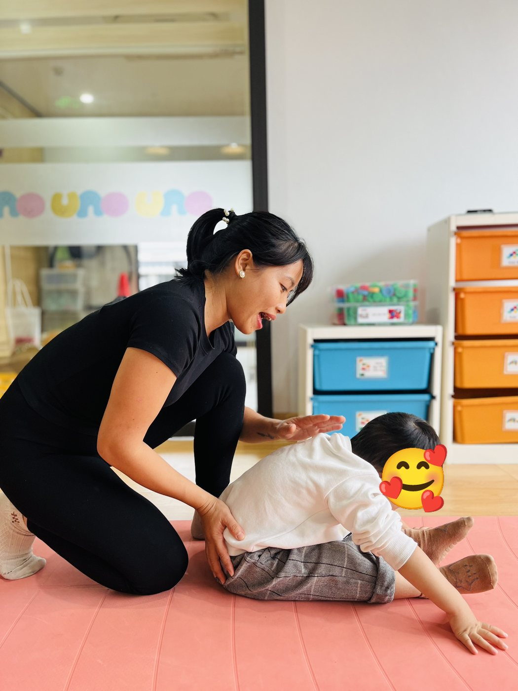
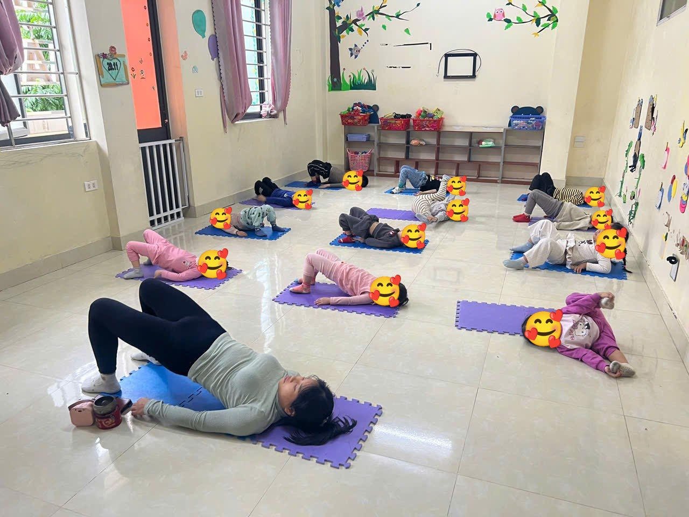
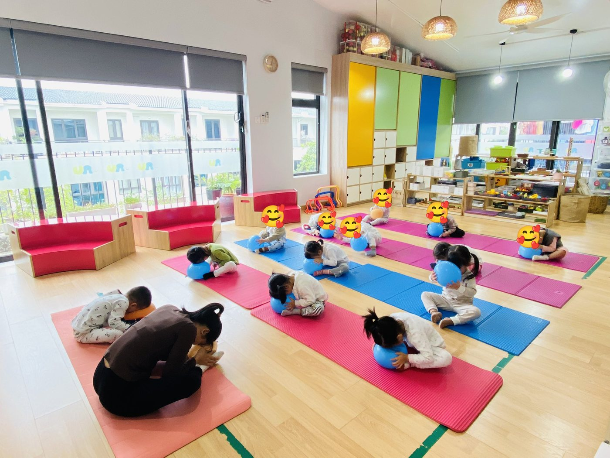
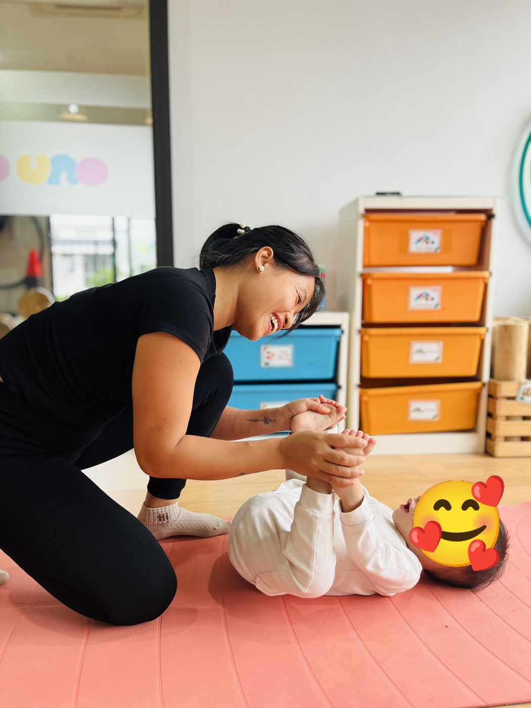
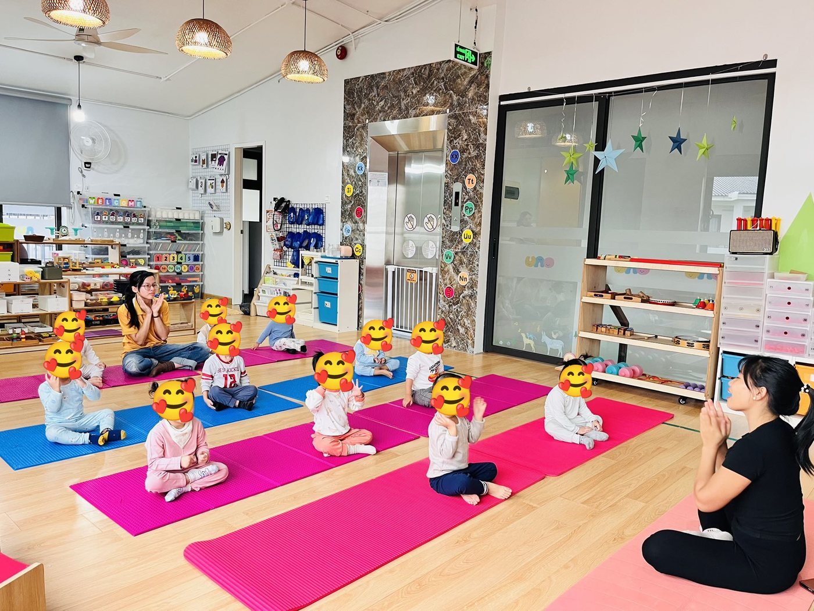

Phương pháp dạy
Yoga trẻ em không phải yoga người lớn thu nhỏ: để con được tập theo cách của con

Cô giơ quả bóng lên đầu, co một chân lên. “Các con ơi, mình thành cái cây nào!”
Và đây là những gì diễn ra trên thảm. Bạn áo xám đặt bàn chân lên tận đùi, đứng vững như cây thật. Bạn áo be chỉ nhấc gót lên một chút. Bạn nhỏ góc trái vẫn ôm bóng trước ngực, chân chưa rời sàn. Hai bạn ở giữa quay sang nhìn nhau rồi cười.
Người mới bước vào có thể nghĩ lớp đang lộn xộn. Sophia thì thấy lớp đang đúng.
Bài này cô viết cho những ai từng băn khoăn: dạy yoga cho trẻ có phải lấy bài của người lớn, rút ngắn lại, thêm tên con vật là xong? Có nên nhắc con làm cho “chuẩn”, cho giống cô không? Sau nhiều năm đứng lớp mầm non, lớp tiểu học, lớp tập cùng bố mẹ, cô muốn chia sẻ lại những gì cơ thể và tâm trí của các con đã dạy cô.
Trẻ con khác người lớn về chất, không chỉ về kích thước
“Người lớn thu nhỏ” là cách nghĩ rất dễ gặp. Một bài 60 phút thì cắt còn 30. Chó úp mặt đổi tên thành “con chó con”. Thời gian giữ tư thế giảm một nửa. Nhìn qua thì hợp lý.
Nhưng một em bé bốn tuổi không phải là một người lớn bé lại. Xương của con mềm hơn. Cột sống chưa xong hình dáng. Nhịp thở nhanh hơn. Bộ não phụ trách việc tự kiểm soát còn đang xây. Và cách con học, qua chơi, qua chạm, qua bắt chước, cũng khác hẳn cách người lớn học. Cùng một tư thế, đặt lên hai cơ thể ấy, sẽ cho ra hai câu chuyện khác nhau.
Cơ thể con đang lớn
Xương còn nhiều sụn
Ở hai đầu các xương dài của trẻ có những đĩa sụn tăng trưởng. Xương dài ra từ đó. Những đĩa sụn này mềm và yếu hơn cả dây chằng bao quanh, nên khi bị kéo hay ép quá sức, chỗ dễ tổn thương nhất ở trẻ lại chính là chúng. Các bác sĩ y học thể thao đã cảnh báo điều này từ lâu (Caine và cộng sự, British Journal of Sports Medicine, 2006). Đĩa sụn đóng dần trong tuổi dậy thì và đầu tuổi trưởng thành.
Vì thế, cô không bao giờ ấn người con xuống cho “sâu hơn”, không kéo chân con cho “thẳng hơn”. Cô đặt tay lên lưng con thật nhẹ, như trong ảnh dưới đây, để con cảm nhận lưng mình. Không phải để đẩy.

Cột sống đi từ chữ C tới chữ S
Em bé mới sinh có cột sống cong một đường như chữ C. Khi con biết ngẩng đầu, đường cong ở cổ hình thành. Khi con đứng và đi, đường cong ở thắt lưng xuất hiện. Phải mất nhiều năm, những đường cong này mới ổn định thành hình chữ S của người lớn, cùng với cơ lưng, cơ bụng đủ khỏe để giữ chúng.
Đây là lý do cột sống là trọng tâm trong cách Sophia dạy. Không phải để con uốn thật sâu. Mà để con được vươn dài, cong, duỗi, xoay nhẹ theo mọi hướng, thật nhiều lần, thật vui. Cột sống khỏe ở trẻ là cột sống được chuyển động đa dạng, không phải cột sống bị giữ lâu ở một tư thế khó.
🌱 Cột sống lớn lên thế nào
Kéo thanh trượt hoặc bấm từng mốc tuổi để xem đường cong cột sống thay đổi.
Khớp mềm, nhưng cơ chưa đủ giữ
Trẻ nhỏ thường dẻo hơn người lớn rất nhiều. Từ năm 1973, nhóm của bác sĩ Peter Beighton đã ghi nhận độ linh hoạt của khớp giảm dần theo tuổi (Annals of the Rheumatic Diseases). Nghe thì có vẻ là lợi thế. Nhưng dẻo mà cơ chưa đủ khỏe để giữ khớp ở vị trí an toàn thì dễ “đổ” vào khớp. Một em bé có thể ngồi xoạc hay uốn cong rất sâu mà không thấy gì, chỉ vì dây chằng còn lỏng.
Với trẻ, cô không đi tìm độ dẻo. Cô đi tìm sự vững vàng và niềm vui khi chuyển động.
Thăng bằng còn đang học
Hệ thống giữ thăng bằng của trẻ, gồm tai trong, mắt, cảm nhận từ bàn chân và khớp, phải mất nhiều năm mới phối hợp nhịp nhàng. Các nhà nghiên cứu vận động Anne Shumway-Cook và Marjorie Woollacott (1985) thấy rằng khả năng kiểm soát tư thế của trẻ chỉ tiến gần người lớn vào khoảng 7 đến 10 tuổi. Bé ba tuổi đứng một chân lắc lư, ngã ra rồi cười, là chuyện hoàn toàn bình thường. Ngã rồi đứng dậy cũng là một phần của bài tập.
Con thở nhanh hơn, nóng nhanh hơn
Trẻ mẫu giáo thở khoảng 20 đến 30 nhịp mỗi phút, nhanh hơn người lớn khá nhiều (Fleming và cộng sự, The Lancet, 2011). Nên những bài thở đếm dài, nín thở lâu dành cho người lớn không hợp với con. Ở lớp cô, hơi thở của trẻ là hơi thở tự nhiên, được dẫn qua trò chơi: thổi bóng, ngửi hoa thổi nến, thở con ong. Không nín thở.
Trẻ cũng điều hòa thân nhiệt kém hơn người lớn. Học viện Nhi khoa Hoa Kỳ khuyên cần cẩn trọng với vận động trong môi trường nóng ở trẻ (Bergeron và cộng sự, Pediatrics, 2011). Phòng tập của các con cần thoáng mát, có nước uống, cho nghỉ khi con đỏ mặt hay mệt.
Tâm trí con cũng đang lớn
Não “phanh” chưa xây xong
Phần não ngay sau trán, nơi giúp mình dừng lại, chờ đợi, kiềm chế, lên kế hoạch, là phần trưởng thành muộn nhất. Những nghiên cứu chụp não theo dõi trẻ nhiều năm của Jay Giedd và cộng sự (Nature Neuroscience, 1999) cho thấy vùng này còn thay đổi tới tận tuổi thiếu niên và sau đó.
Khi mình yêu cầu một em bé ba tuổi “ngồi im mười phút”, mình đang đòi một thứ mà bộ não của con chưa có. Con không hư. Con chỉ chưa đủ “phanh”. Việc của cô là thiết kế tiết học để con không phải phanh quá lâu.
Con vận động thành từng đợt ngắn
Khi quan sát trẻ chơi tự do, Bailey và cộng sự (Medicine & Science in Sports & Exercise, 1995) thấy trẻ hoạt động mạnh theo từng đợt rất ngắn, chỉ vài giây, rồi nghỉ, rồi lại chạy. Cơ thể trẻ được “thiết kế” như vậy. Nên một tiết yoga trẻ em tốt sẽ có nhịp lên xuống: động rồi tĩnh, chạy rồi nằm, nhảy rồi thở. Không giữ một tư thế thật lâu như lớp người lớn.
Các cô mầm non hay ước chừng: mỗi tuổi của con tương ứng khoảng vài phút tập trung cho một hoạt động. Đó không phải công thức khoa học chính xác, nhưng là một lời nhắc tốt. Bé ba tuổi cần đổi hoạt động sau vài phút. Cô đổi trước khi con chán.
Con học bằng giác quan và bằng cách bắt chước
Từ năm 1977, Andrew Meltzoff và Keith Moore đã ghi lại cảnh trẻ sơ sinh vài tuần tuổi bắt chước được nét mặt người lớn (Science). Bắt chước là cách học có sẵn trong con người. Trẻ sẽ tự nhìn cô và làm theo, theo cách của riêng con, ở mức cơ thể con cho phép. Mình không cần ép. Chỉ cần làm mẫu thật đẹp, thật vui, rồi chờ.
Trẻ cũng học qua giác quan: được chạm, được lăn, được lộn ngược, được nghe tiếng chuông, được sờ quả bóng. Nhà trị liệu Jean Ayres gọi đó là tích hợp cảm giác. Trong cuốn Balanced and Barefoot (2016), Angela Hanscom kể rất nhiều về việc trẻ cần chạy nhảy, quay tròn, đi chân đất ngoài trời để hệ thăng bằng và cảm nhận cơ thể phát triển. Một tiết yoga nhiều giác quan giúp con học sâu hơn một tiết chỉ đứng nhìn và làm theo.
🔍 Người lớn và trẻ em: chạm để lật thẻ
Mặt trước là cơ thể người lớn, mặt sau là trẻ em và điều cô làm khác đi.
Vì sao cô không quát, không bắt con làm giống y hệt


Nhìn hai bức ảnh này. Cô giáo nhấc một chân lên cao. Các bạn phía sau làm theo, mỗi bạn một độ cao, một kiểu. Bạn nhỏ áo hồng thì ngồi giữa thảm, xoay người, vỗ tay. Tới lúc nằm làm cây cầu, bạn ấy lại nằm dang tay chân như một ngôi sao.
Cô có nhắc không? Không. Bạn ấy đang ở trong lớp, đang nhìn, đang vui, đang chuyển động theo cách cơ thể bạn ấy muốn lúc đó. Tuần sau, có thể bạn ấy sẽ làm cây cầu. Có thể không. Cả hai đều ổn.
Khi bị quát, cơ thể con đóng lại
Một tiếng quát với người lớn có khi chỉ là khó chịu. Với một em bé, đó là tín hiệu nguy hiểm. Hệ thần kinh của con chuyển sang chế độ phòng vệ: tim đập nhanh, cơ co lại, hơi thở nông. Trong cuốn The Whole-Brain Child (2011), bác sĩ tâm thần Daniel Siegel và Tina Payne Bryson gọi đó là lúc “não tầng dưới” cầm lái. Ở trạng thái ấy, con không học được gì, càng không thở sâu hay thư giãn được.
Lâu dài, lời nói nặng cũng để lại dấu vết. Một nghiên cứu theo dõi gần 1.000 gia đình của Ming-Te Wang và Sarah Kenny (Child Development, 2014) cho thấy cách kỷ luật bằng lời gay gắt như quát mắng, chửi, gắn liền với nhiều vấn đề hành vi và triệu chứng trầm cảm hơn ở tuổi thiếu niên. Yoga là nơi con được an toàn. Lớp yoga không thể là nơi con sợ.
Khi bị bắt làm giống hệt, con mất đi điều quý nhất
Bắt một cơ thể đang lớn làm y hệt cơ thể người lớn là đẩy khớp, đẩy cột sống của con vào chỗ chưa sẵn sàng. Đó là chuyện an toàn.
Còn một chuyện sâu hơn. Các nhà tâm lý học Edward Deci và Richard Ryan, qua hàng chục năm nghiên cứu về động lực, chỉ ra rằng con người, nhất là trẻ nhỏ, cần cảm giác được tự chọn thì mới giữ được hứng thú tự thân. Từ năm 1973, thí nghiệm của Lepper, Greene và Nisbett đã thấy những em bé vốn thích vẽ lại vẽ ít đi sau khi bị biến việc vẽ thành việc “phải làm để được thưởng”. Khi yoga trở thành việc phải làm cho đúng, cho giống, cho cô vừa lòng, con sẽ tập vì cô. Còn khi được tự do trong một khung an toàn, con tập vì con thích. Và sẽ còn tập lâu.
Tự do không phải là thả nổi
Tự do ở lớp cô có khung. Khung đơn giản thôi, ba điều: không làm đau mình, không làm đau bạn, nghe tiếng chuông thì dừng lại. Trong khung ấy, con được chọn mức của mình, được nghỉ, được ngồi xem, được biến tấu. Cô vẫn dẫn, vẫn làm mẫu, vẫn có nhịp rõ ràng. Chỉ là cô dẫn bằng niềm vui, không bằng tiếng quát.
Trong yoga, giới đầu tiên của tám bậc là Ahimsa, không gây tổn hại. Không tổn hại bằng tay, và cũng không bằng lời. Với một người dạy trẻ, cô nghĩ Ahimsa bắt đầu từ giọng nói của mình.
💬 Đổi một câu nói
Chạm vào câu quen miệng để xem cô thường nói thế nào thay vào đó.
Dạy yoga cho trẻ dựa trên năm thể
Yoga không chỉ là tư thế. Theo Taittiriya Upanishad, con người có năm lớp, năm thể lồng vào nhau như những vòng tròn: thể thân, thể khí, thể tâm, thể trí và thể tinh thần (thể phúc lạc). Với người lớn, Sophia dạy yoga cân bằng phục hồi trên cả năm thể. Với trẻ con cũng vậy, chỉ là cách chạm vào từng thể nhẹ nhàng hơn, vui hơn.
Gốc là hơi thở. Trọng tâm là cột sống. Hướng đi là cân bằng. Tư thế chỉ là một phần.
🌸 Năm thể trong một tiết học của trẻ
Chạm vào từng vòng (hoặc từng nút) để xem cô chăm sóc thể ấy thế nào trong giờ học.
1. Thể thân: tư thế đơn giản, cột sống chuyển động
Cô chọn những tư thế đơn giản nhất mà hiệu quả nhất cho cơ thể đang lớn: con mèo con bò cho cột sống, cái cây cho thăng bằng, cây cầu cho lưng và bụng, em bé cho nghỉ ngơi, chó úp mặt cho vai và chân. Không trồng chuối, không đứng bằng đầu, không ép xoạc. Giữ ngắn, ba đến năm hơi thở. Động trước, tĩnh sau. Và khi có thể, cho con đi chân đất, tập ngoài trời, dưới nắng sớm.


2. Thể khí: hơi thở làm gốc, qua trò chơi
Hơi thở là cây cầu giữa thân và tâm. Với trẻ, cô không giảng giải. Cô đưa con quả bóng: “Hít vào, bóng phồng lên. Thở ra, bóng xẹp xuống.” Cô cho con ngửi bông hoa tưởng tượng rồi thổi tắt cây nến. Cô cho con thở thành tiếng ong vo ve. Thở chậm, thở tự nhiên, không đếm dài, không nín. Một bạn thở ra thật dài một lần là đủ cho cô vui cả buổi.

3. Thể tâm: cảm xúc an toàn
Trẻ chỉ mở lòng khi thấy an toàn. Thể tâm của con được nuôi bằng giọng nói ấm, ánh mắt cười, một câu chuyện có nhân vật con yêu thích, một bản nhạc nhẹ, một lời khen đúng lúc. Cô gọi tên cảm xúc cùng con: “Hôm nay con thấy như trời nắng hay trời mưa?” Không có câu trả lời sai.


4. Thể trí: hiểu cơ thể mình, được tự chọn
Thể trí là phần biết quan sát, biết hiểu. Cô hỏi nhiều hơn là ra lệnh: “Con thấy chân nào vững hơn?”, “Lúc thở ra, bụng con đi đâu?” Cô cho con tự đặt tên cho tư thế mới, tự chọn con vật để làm. Những giới luật của yoga như không làm đau ai (Ahimsa), nói thật (Satya), bằng lòng với mình (Santosha), cô gửi vào những câu chuyện ngắn, để con hiểu bằng trái tim trước khi hiểu bằng đầu.
Diamond và Lee (Science, 2011) khi tổng hợp các cách giúp trẻ 4 đến 12 tuổi phát triển khả năng tự điều khiển bản thân, đã thấy những hoạt động hiệu quả thường có chung điểm: con được tập lặp lại, thử thách tăng dần, và con thấy vui, thấy được ủng hộ. Không phải căng thẳng.
5. Thể tinh thần: niềm vui và sự kết nối
Đây là lớp sâu nhất. Người xưa gọi là thể phúc lạc. Cô tin trẻ con ở gần lớp này hơn người lớn rất nhiều. Các con cười không cần lý do. Các con sống trọn trong phút này. Cô chỉ cần đừng làm mất điều ấy.
Cuối mỗi buổi, cả lớp nằm yên. Cô đi qua từng bạn, đặt tay lên trán, xoa nhẹ đôi má. Không nói gì nhiều. Có hôm có bạn ngủ quên. Với cô, khoảnh khắc ấy là phần yoga quan trọng nhất của buổi học.
Nhịp một tiết học 30 phút cho trẻ
Đây là khung cô hay dùng cho các bạn 3 đến 6 tuổi. Các bạn nhỏ hơn thì rút ngắn từng phần, nhiều trò chơi hơn. Bấm vào từng phần để xem.
Yoga cho trẻ không dừng ở tấm thảm
Như với người lớn, Sophia luôn nói với bố mẹ: tư thế chỉ là một phần. Một em bé ngủ đủ giấc, được ăn những bữa lành, được chạy chơi ngoài trời, đi chân đất trên cỏ, tắm nắng sớm, ít màn hình, được bố mẹ ôm và trò chuyện mỗi tối, sẽ nhận từ yoga nhiều hơn rất nhiều. Và khi bố mẹ cũng thở chậm lại, nói nhỏ lại, con sẽ học theo. Trẻ học hơi thở từ người lớn gần mình nhất.
🕊 Một chút về phần tâm linh
Trong cuốn Nhà tiên tri (1923), Kahlil Gibran viết về con cái: mình có thể cho con tình yêu, nhưng không thể cho con những ý nghĩ của mình, vì con có ý nghĩ của riêng con. Mỗi lần thấy một bạn nhỏ làm cái cây theo cách chẳng giống ai, cô lại nhớ câu ấy.
Yoga có nghĩa là kết nối. Với trẻ, kết nối đầu tiên là với cơ thể mình, rồi với hơi thở, với bạn bè, với cô, với thiên nhiên. Khi mình để con tự do trong sự an toàn, mình đang tin vào phần sáng trong con. Và nhiều khi, chính các con dẫn cô trở về với hiện tại.
Khoa học nói gì về yoga cho trẻ
Cô muốn nói thật: nghiên cứu về yoga cho trẻ em còn ít và phần lớn quy mô nhỏ. Tổng quan hệ thống của Birdee và cộng sự (Academic Pediatrics, 2009) thấy yoga cho trẻ an toàn và có nhiều dấu hiệu tích cực, nhưng cần thêm nghiên cứu chất lượng cao. Hagen và Nayar (Frontiers in Psychiatry, 2014) điểm lại các nghiên cứu và thấy tiềm năng của yoga cho sức khỏe tinh thần, sự tập trung, cách điều tiết cảm xúc của trẻ. Đây là những con số khiêm tốn và trung thực. Phần còn lại, cô thấy ở các con sau mỗi buổi học: một hơi thở ra dài hơn, một cái ôm, một bạn nhút nhát hôm nay đã bước lên thảm.
Vài điều cô hay để ý
- Không ấn, không kéo, không chỉnh mạnh. Tay cô chỉ đặt hờ để con cảm nhận. Con thấy đau là dừng ngay.
- Không nín thở, không bài thở mạnh. Những phép thở mạnh, thở nhanh của người lớn không dùng cho trẻ nhỏ.
- Không đè lên cổ. Cô không cho trẻ nhỏ đứng bằng đầu hay giữ lâu những tư thế dồn sức nặng lên cổ.
- Không phòng nóng. Phòng thoáng, có nước, nghỉ khi con mệt hay đỏ mặt.
- Không so sánh. So con với chính con hôm qua thôi.
- Khi nào cần hỏi bác sĩ. Trẻ có bệnh tim, động kinh, vừa chấn thương, khớp quá lỏng hay hay trật khớp, hoặc đang điều trị bệnh gì, bố mẹ nên hỏi bác sĩ nhi trước khi cho con tập. Nếu con hay đau khớp, đau lưng kéo dài, cũng cần đưa con đi khám. Yoga đi cùng, không thay thế bác sĩ.
Điều cô học được từ các con
Hồi mới dạy, cô cũng từng muốn cả lớp làm thật đều, thật đẹp để chụp ảnh. Rồi cô nhận ra những tấm ảnh đẹp nhất lại là những tấm không ai giống ai. Một bạn nhấc chân cao. Một bạn ngồi cười. Một bạn nằm hình ngôi sao giữa cả lớp đang làm cây cầu.
Dạy yoga cho trẻ, hóa ra là học cách lùi lại một bước. Để con lớn theo nhịp của con.
Mình không dạy trẻ con làm người lớn. Mình giữ cho trẻ con được là trẻ con, trên tấm thảm, trong hơi thở.
🌿 Thầy cô muốn dạy yoga trẻ em theo cách này?
Cách chọn tư thế an toàn cho từng độ tuổi, cách dẫn hơi thở qua trò chơi, cách giữ lớp mà không cần quát, cách xây một tiết học đi qua cả năm thể… Sophia hướng dẫn kỹ trong khóa Đào tạo Huấn luyện viên Yoga trẻ em. Bố mẹ muốn con được tập ở lớp cô thì nhắn cô hỏi lịch nhé.
Đọc thêm: Năm thể của con người, Ứng dụng yoga cân bằng phục hồi cho bé ngồi nhiều, hay gù lưng, Yoga với quả bóng to và 20 trò chơi trong lớp Yoga.
📚 Tài liệu tham khảo
- Caine D, DiFiori J, Maffulli N. Physeal injuries in children’s and youth sports: reasons for concern? British Journal of Sports Medicine, 2006;40:749–760.
- Beighton P, Solomon L, Soskolne CL. Articular mobility in an African population. Annals of the Rheumatic Diseases, 1973;32:413–418.
- Shumway-Cook A, Woollacott MH. The growth of stability: postural control from a developmental perspective. Journal of Motor Behavior, 1985;17(2):131–147.
- Fleming S, Thompson M, Stevens R, et al. Normal ranges of heart rate and respiratory rate in children from birth to 18 years of age. The Lancet, 2011;377:1011–1018.
- Bergeron MF, Devore C, Rice SG; American Academy of Pediatrics. Climatic heat stress and exercising children and adolescents. Pediatrics, 2011;128(3):e741–e747.
- Giedd JN, Blumenthal J, Jeffries NO, et al. Brain development during childhood and adolescence: a longitudinal MRI study. Nature Neuroscience, 1999;2:861–863.
- Bailey RC, Olson J, Pepper SL, et al. The level and tempo of children’s physical activity: an observational study. Medicine & Science in Sports & Exercise, 1995;27(7):1033–1041.
- Meltzoff AN, Moore MK. Imitation of facial and manual gestures by human neonates. Science, 1977;198:75–78.
- Ayres AJ. Sensory Integration and Learning Disorders. Western Psychological Services, 1972.
- Hanscom AJ. Balanced and Barefoot. New Harbinger, 2016.
- Siegel DJ, Bryson TP. The Whole-Brain Child. Delacorte Press, 2011.
- Wang MT, Kenny S. Longitudinal links between fathers’ and mothers’ harsh verbal discipline and adolescents’ conduct problems and depressive symptoms. Child Development, 2014;85(3):908–923.
- Lepper MR, Greene D, Nisbett RE. Undermining children’s intrinsic interest with extrinsic reward. Journal of Personality and Social Psychology, 1973;28(1):129–137.
- Deci EL, Ryan RM. The “what” and “why” of goal pursuits: human needs and the self-determination of behavior. Psychological Inquiry, 2000;11(4):227–268.
- Diamond A, Lee K. Interventions shown to aid executive function development in children 4 to 12 years old. Science, 2011;333:959–964.
- Birdee GS, Yeh GY, Wayne PM, et al. Clinical applications of yoga for the pediatric population: a systematic review. Academic Pediatrics, 2009;9(4):212–220.
- Hagen I, Nayar US. Yoga for children and young people’s mental health and well-being. Frontiers in Psychiatry, 2014;5:35.
- Gibran K. The Prophet. Alfred A. Knopf, 1923.